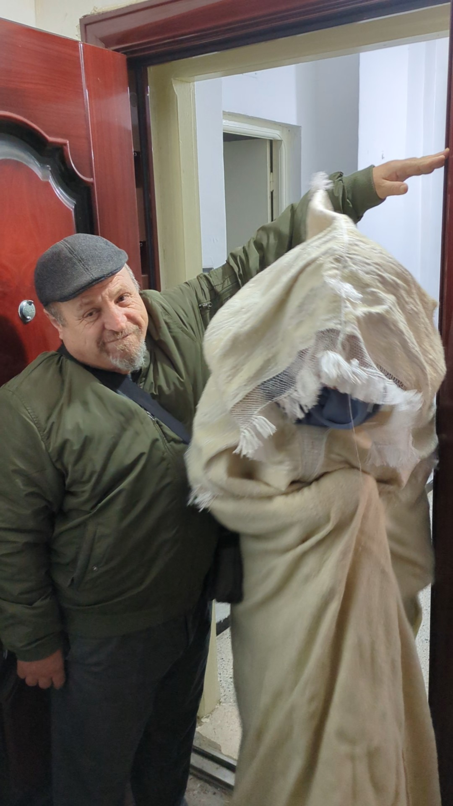

Le burnous kabyle
[ Il incarne à la fois la tradition, la résistance et l’identité d’un peuple. Il assure la transition émouvante de la mariée, entourée de l’amour de son père, puis accueillie dans une nouvelle famille sous la protection du beau-père. ]
Il descend des montagnes, drapé de noblesse,
Tissé par des mains fières, empreintes de sagesse.
Blanc comme la neige sur les cimes endormies,
Ou sombre comme la nuit sur les terres infinies.
Il danse sous le vent, témoin des bravades,
Compagnon du berger et de l’âme nomade.
Sur l’épaule du vieux, il raconte le passé du devenir,
Sur le dos du jeune, il embrasse l’avenir.
Tissé de silence et d’histoires anciennes,
Il murmure les chants des aïeux kabyles,
Garde le secret des âmes vaillantes,
Et couvre le corps de son ombre tranquille.
Ce soir, sous la porte, un père s’incline,
Sa fille s’avance, le cœur en lumière,
Drapée du burnous, pur comme l’aurore,
Dernière caresse d’un amour sincère.
Sous son bras tremblant, elle quitte le nid,
Portant en elle les chants d’autrefois.
Un pas en avant, le seuil se franchit,
Son âme hésite, mais son cœur y croit.
Au seuil d’une autre porte, un autre bras l’attend,
Celui du père d’un amour naissant.
Sous ce toit nouveau, elle dépose son rêve,
Un nid l’accueille, un destin s’élève.
O burnous d’orgueil, étoffe du cœur,
Témoin d’un passage, d’un doux honneur.
Que ton fil d’argent, que ta laine pure,
Bercent encore l’écho d’une terre si dure.
Djamel Metref
At Yenni le 14 mai 2025

← Tous les poèmes